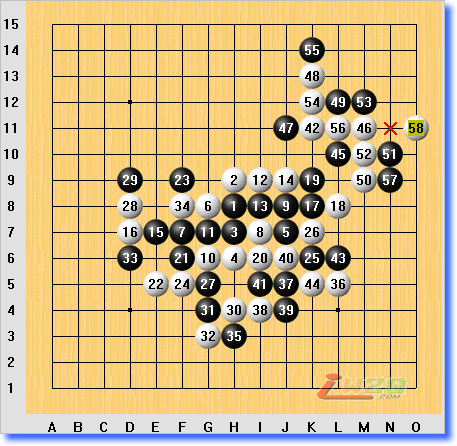

全团赛自战简评(炫飞一队黄立勤)
首页
≮炫飞☆棋社≯
#1 全团赛自战简评(炫飞一队黄立勤) 作者：雨一直下 发表时间：2008-6-16 21:02:23
第二届全国五子棋团体赛于6月7号在石家庄正式拉开序幕…很幸运，在≮炫飞☆棋社≯的组织下，本人和吴镝、李非、贺启发代表炫飞1队参加此次全团赛，他们实力都非常强，而且比赛过程中虽然我拖了他们的后腿,不过他们都只是一直给我打气，团队内气氛很团结，是一帮难得的好队友。 比赛前小记：不得不说一下，本次赛前感觉非常衰…先是在6月6号早上上飞机前丢了上机的电子客票，好不容易打电话问了一翻航班号，航空公司，凭身份证上机了（虚惊一场）。然后过关时因为带了液态物品，在处理这个事情上，把炫飞队服、手机、钱包丢在关卡那忘了拿，后来几经波折，终于凭登机证找回来（再惊一场）。不知道是不是惊出冷汗来了,寒，乘飞机时因为发烧，身体一直发冷，头非常痛，到宾馆后吃了退烧药，睡了一下午觉才感觉好一点~赛前恶梦才暂告一段落，下面让大家来分享非常衰的比赛受虐过程： 比赛简评：
第一轮 曾扬锋（黑）胜 黄立勤（白） 未交换
疏星开局，拿白我还是非常有信心的，没有交换，大定式走到26，27抢占H12要点，27要点被占以后，我认为白右上的局部进攻已经不能凑效了。于是实战28-32选择交换掉双方余味，再过来防守。实战33弱，34命令式的要求35活3以后。白棋有效地牵制了黑左上的进攻，就有了38直接在左下先动手的机会。接下来我拿白一轮弱手进攻至54以后，发现我若不连攻，黑棋假如做实战59这个点，我防60非常干净，黑棋右边并没有进攻手段。就有了56-60手。接下来也就是理所当然地非常干净的起防了第60手，于是也就非常干净的2步VCF输掉本局。第二轮 张埕（黑）胜 黄立勤（白） 交换
草率的一局：山月开局，第二轮赛前我突然想起这个变化，就问了下队友能用不~结果他们给出的解法我都有信心能防住，就使用了这个变化。走到24是我曾经用黑石看过没杀的变化~结果走了以后我自己一算，竟然VCT了…很不幸，对手长考后把这个VCT走了出来。无奈投子…
第三轮 黄立勤（黑）负 李鹏（白） 交换
斜月我拿黑，大定走到35，36第一次见，算了一下，到37-45按构想进行~ 实战46、48强防，黑棋已经不能胜了。下面先手随便走走，黑白已经没有什么东西了。最后剩几分钟乱中出错，漏防3步VCF而死。第四轮 黄宇峰（黑）胜 黄立勤（白） 交换
松月开局，到白16是准备的变化~黑17-21选择了控制的走法，所以进攻并不凌厉。接下来黑白都走的很保守，有点乏味。40手漏简单杀的败招。~直接输掉本局。
第五轮 白 欣（黑）负 黄立勤（白） 交换

松月开局~大概是对手看到4台跟我用一样的变化，所以7手选择避开流行定式。但避开流行定式以后黑却没能好好的控制局面。行至白22，黑棋已经相当为难。23无奈~24-28开始反击。29防守却没能做出VCT。得先手后30开始进攻~黑的防守并不强，到58简单取胜。第六轮 陈新（黑）胜 黄立勤（白） 未交换
没啥好说的~中研究的一盘。
第七轮 郑蔚楠（黑）胜 黄立勤（白） 未交换（棋谱不全）
【有志注：土豆老师勘误，此局应该和了】
因为天才跟郑蔚楠之前走过一局一打，我之前一直觉得这个白8黑相当不好办，于是我就留了一打。对手相当快的走了黑9，算了一下，此时我觉得白相当不好办。就选择了最稳妥的下法到白18。 黑19单盖以后，白更是为难~于是长考后走了对攻的白20。黑一堆东西跟做棋点，却没有VCT。黑21-31交换以后过来防。此时白已经占优，但比赛时一直非常不舒服。头晕，要杀已经感觉力不从心。而且当对手剩5分钟。我剩10分钟时，脑里面完全是一片空白。白白看着时间过了啥也没算清，再加上之前几局因为时间紧而输的棋。后面全是啥都没想乱拍的棋~下完
#2 Re:全团赛自战简评(炫飞一队黄立勤) 作者：五子酷 发表时间：2008-6-17 12:46:37
勤勤辛苦了 ：） 永远支持你！
#3 Re:全团赛自战简评(炫飞一队黄立勤) 作者：lfzxdh 发表时间：2008-6-20 10:31:16
下次“卷土重来”~~~哈哈
#4 Re:全团赛自战简评(炫飞一队黄立勤) 作者：牛牛 发表时间：2008-6-23 11:22:24
大立 大立 终于见到真人了,哈哈,你太瘦了,胳膊真是细啊. 比赛前一直感冒发烧能下到这样很不错了,下次要注意身体啊,保持健康的身体很重要
大立 终于见到真人了,哈哈,你太瘦了,胳膊真是细啊. 比赛前一直感冒发烧能下到这样很不错了,下次要注意身体啊,保持健康的身体很重要
#5 Re:全团赛自战简评(炫飞一队黄立勤) 作者：小豆 发表时间：2008-10-6 15:57:10
该胜的都胜了，该输的则都输了。没有冷门出现。